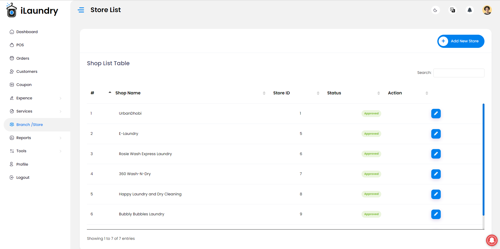
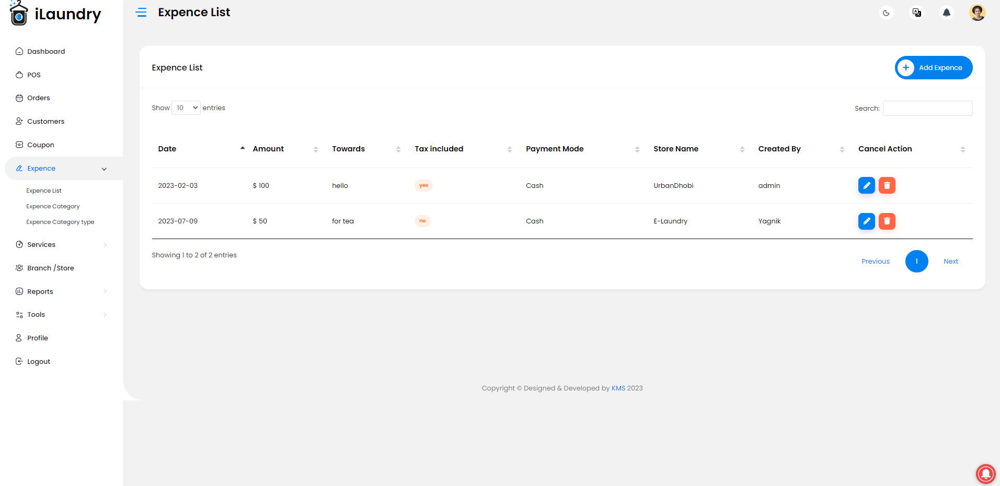

- Updated : 18 July 2023
- Contact Our Support Team Email: cherrystuart83@gmail.com
- Skype: KMS Agency
Introduction
Thank you for your interest in ilaundry.
Our laundry management system is a powerful and efficient solution designed specifically for laundry owners. It encompasses various modules that cover every aspect of your business, ensuring smooth operations and exceptional customer service. The point-of-sale (POS) module enables seamless invoicing, payment processing, and customer information management. With the order management module, you can easily create, track, and assign orders to specific staff members or departments, ensuring timely completion and customer satisfaction. Our coupon management feature allows you to create and manage discounts and promotional offers, attracting customers while maintaining profitability. The expense management module helps you monitor and categorize expenses, enabling better financial control and budgeting. Additionally, the report management module generates detailed reports on sales, revenue, customer analytics, and inventory, empowering you with valuable insights for informed decision-making. With our comprehensive laundry management system, you can streamline operations, enhance customer experiences, optimize expenses, and drive business growth effectively.
Point-of-Sale (POS) Management
- The POS module handles the sales transactions at your laundry.
- It enables you to create invoices for customers, calculate pricing based on services offered (e.g., washing, drying, folding), and process payments.
- The system may also track customer information, such as contact details, preferences, and payment history, for better customer service.
Order Management
- The order management module helps you handle customer requests for laundry services.
- It allows you to create and manage orders, including tracking their status (received, in progress, completed).
- You can assign orders to specific staff members or departments responsible for different stages of the laundry process.
- The module may also include features like order scheduling, prioritization, and notifications to keep both staff and customers updated.
Coupon Management
- The coupon management module is designed to handle discounts and promotional offers.
- It enables you to create and manage coupons with various parameters, such as discount percentages or fixed amounts.
- You can set conditions for coupon usage, such as minimum order amount or specific services eligible for discounts.
- The system should be able to validate and apply coupons automatically during the billing process.
Expense Management
- The expense management module allows you to track and manage your laundry business expenses.
- It includes features to record and categorize expenses, such as utility bills, supply purchases, equipment maintenance, employee wages, and rent.
- You can generate expense reports for analysis and budgeting purposes.
- The module may also provide tools to reconcile expenses with revenue to assess profitability.
Report Management
- The report management module provides insights into your laundry business's performance.
- It generates various reports, such as sales reports, revenue reports, customer analytics, and inventory reports.
- These reports help you monitor key metrics, identify trends, and make informed decisions.
- The system may allow customization of report parameters, export options (e.g., PDF, Excel), and scheduling for automated report generation.
Basic
As ilaundry is a complete system with lots of modules for web , it is compulsory to have some basic knowledge in server side if you want to do the installation.
- Real server Server related knowledge like apache or local machine server, we preferred to use a real server.
- Server related knowledge and we preferred cPanel in your server for quick installation
- basic knowledge about google cloud and firebase.
warning
The Envato price don’t included any kind of installation and deploy support. You need to follow the documentation step by step for installation, setup and other branding related changes. We are not responsible for your mistake. Also if you do any kind of customization it is totally your responsibility.
Server
Require For Setup Node js And Run Properly.
- ilaundry require node js version 16 and above.
- Require Node Module Folder
warning
Please do this very carefully. We will not be responsible for your mistake.
Must Required Sub Domain
Our code is designed to be fully compatible and supported only on subdomains, such as https://subdomain.yourdomainname.com. It cannot be installed on the root domain or any additional paths, like https://www.yourdomainname.com/admin. Additionally, it is not compatible with localhost or any private DNS zones.
Install on server
1. Database Configuration
Before starting the admin installation, database must be configured for the application.
For creating the database, the following ways must be maintained-
- Go to MySQL Databases

- Create a new database for the application

- Create a user for the database

warning
Avoid using hash ("#" or "$") in your password
- Add the user to the database
- Give privileges to the user

Node Js Web App
Prerequisite
Environment Setup
You have to download and setup node js from nodejs.org. You can follow documentation with your own device.
Installing Node js
tip
Recommended link is here -
Great!! As now you have installed the NodeJs successfully, now you just have to install NPM or Yarn. Below we have given the easy documentation.
Installing npm
tip
You can check the official documentation -
https://docs.npmjs.com/downloading-and-installing-node-js-and-npm
sudo apt install -g npmAnd,
Installing Yarn
tip
You can check the official documentation -
https://classic.yarnpkg.com/lang/en/docs/install/#debian-stable
npm install --global yarnMandatory Setup (Web)
1. Add Twilio Account Details For Getting SMS
To get the Twilio Auth Token, Phone Number, and Account SID, you will need to follow these steps:
- Go to the Twilio website and sign up for an account if you haven't already done so.
tip
You can Register On Twilio Here
- Once you are signed in, go to the console dashboard. Here you will see your Account SID and a button to reveal your Auth Token.
- To get a phone number, click "Phone Numbers" in the navigation bar, then select "Buy a Number". You can choose from a variety of phone numbers from different countries and regions.
- Follow the prompts to purchase a phone number and assign it to your project.
- After purchasing a phone number, you can find it under the "Active Numbers" section in the "Phone Numbers" tab of the console.
Note that the Auth Token is a sensitive piece of information, and you should never share it with anyone. Keep it safe and secure. Additionally, make sure to use your purchased phone number according to Twilio's terms of service and applicable laws and regulations.
2. Onesignal Web Push Notification
tip
You can Register On Onesignal Here
- Sign up for a free account on the OneSignal website.
- Once you are signed in, create a new app and select "Web Push" as your platform. You will be prompted to enter some basic information about your app.
- After configuring your web push settings, download and install the OneSignal SDK into your website code. You can find detailed instructions on how to do this in the OneSignal documentation
tip
Web Push Onesignal Notification
https://documentation.onesignal.com/docs/web-push-quickstart
It's important to note that web push notifications may not be supported on all browsers and devices, so it's a good idea to test your implementation thoroughly before launching it to your users. Additionally, you should always respect users' preferences and only send notifications that are relevant and valuable to them.
tip
Recommended tutorial is below for cpanel with have setup node js 👇
Site Build and Deploy
1.Deploy in Your Own Server Like Vps Or Dedicated Server
1.1 Package Installation
To install node_module , run the following command
npm install Mandatory
Make sure you have node_modules installed in your directory.
The above command will install all the node modules in your directory.
1.2 Project Run On background
-
Install PM2 in your server
npm install pm2 -g -
To run the site in your server, you have to run the PM2 command given below
pm2 start npm --name "`YOUR_PROJECT_NAME`" -- start -
To re-deploy your site after some changes, you must run the following commands
pm2 delete "YOUR_PROJECT_NAME" pm2 start npm --name "YOUR_PROJECT_NAME" -- start
MANDATORY
Must follow the above instructions
2.Deploy to Vercel
Deploying a Node.js app to Vercel is a fairly straightforward process, and can be done in just a few steps.
Here's what you'll need to do:
-
Sign up for a Vercel account.
tip
Web Push Onesignal Notification
-
Install the Vercel CLI by running the following command in your terminal:
npm install -g vercel -
Navigate to the root directory of your Node.js app and run the following command to initialize your Vercel project:
vercel init - Follow the prompts to link your Vercel account and select your project.
-
After the initialization is complete, run the vercel deploy command to deploy your app to Vercel:
vercel deploy - The deployment process will begin, and you'll be given a URL where your app can be accessed once it's deployed.
That's it! Your Node.js app should now be up and running on Vercel. If you need to make any updates or changes, simply push your changes to your code repository and Vercel will automatically redeploy your app.
Features information
-
Dashboard:
ilaundry dashboard Show Total Sales,Recent Orders,Total Orders,Total Services,Total customer.
-
POS:
Point-of-Sale (POS) management for a laundry business involves using software and processes to handle customer transactions, manage inventory, track orders, maintain customer information, generate reports, and integrate with other systems. With a POS system in place, laundry businesses can process payments seamlessly, keep track of inventory items such as detergents and hangers, monitor order status from drop-off to pick-up, maintain a customer database for personalized service, and obtain valuable insights through sales reports and analytics. This efficient and integrated approach helps streamline operations, enhance customer experience, and optimize overall management in the laundry industry.
-
Order Management:
Order Manage Easily Create,Edit,View And Print Of The Order With BarCode Attach To Order.
-
Customer Management:
Customer Manage Easily Create,Edit Operation.
-
Store And Branch Management:
Store and branch management in the laundry industry involves overseeing the operations of multiple locations to ensure efficient and effective functioning. This role includes a variety of responsibilities such as managing inventory, coordinating staff schedules, monitoring equipment maintenance, and ensuring quality control standards are met. Store and branch managers are responsible for setting and achieving sales targets, implementing marketing strategies, and fostering positive customer relationships. They must also track financial performance, analyze data, and make informed decisions to drive business growth. Effective communication and leadership skills are essential in this role as managers need to motivate and train their teams, resolve customer complaints, and collaborate with suppliers and other stakeholders. By effectively managing stores and branches, laundry businesses can provide top-notch service while maximizing productivity and profitability.

-
Role Management:
Role management in a laundry system involves assigning and managing different roles and responsibilities to individuals involved in the operation of the system. The purpose of role management is to ensure smooth functioning, efficiency, and accountability within the laundry facility. Typically, key roles in a laundry system include administrators, staff members, and customers. Administrators are responsible for overseeing the overall management of the system, including user access control, maintaining system integrity, and setting up operational guidelines. Staff members, such as laundry attendants, are tasked with handling various laundry-related tasks, such as receiving and sorting clothes, operating washing machines and dryers, folding and packaging clean laundry, and delivering it to customers. Lastly, customers play a role in the system by submitting their laundry requests, specifying preferences, making payments, and collecting their clean laundry. Proper role management involves defining and assigning specific responsibilities, ensuring appropriate access levels, and maintaining clear communication channels among all participants to optimize the efficiency and effectiveness of the laundry system.
-
Store Payout Management:
Store payout management in a laundry system involves handling the financial aspect of the business, specifically managing payouts to staff members and vendors. It includes processes such as calculating wages, tracking commissions or bonuses, and disbursing payments for laundry services rendered. Payout management ensures that employees are fairly compensated for their work and that vendors receive timely and accurate payments for the supplies or services they provide to the laundry facility. This requires maintaining detailed records of employee hours worked, rates of pay, and any additional factors that may affect compensation, such as overtime or shift differentials. Additionally, payout management involves verifying invoices from vendors, reconciling accounts payable, and issuing payments in accordance with agreed-upon terms. Proper store payout management helps to maintain financial transparency, build trust with staff and vendors, and ensure the smooth operation of the laundry system by effectively managing its financial obligations.
-
Reports:
Reports in a laundry system are essential for monitoring and analyzing various aspects of the business. These reports provide valuable insights into operational efficiency, financial performance, customer trends, and inventory management. Some common types of reports in a laundry system include sales reports, expense reports, customer satisfaction reports, inventory reports, and performance reports. Sales reports track revenue generated from laundry services, helping to identify peak periods, popular service packages, and potential areas for growth. Expense reports outline the laundry facility's costs, including labor, supplies, equipment maintenance, and utilities, enabling effective budgeting and expense control. Customer satisfaction reports capture feedback and ratings from customers, allowing the management to address any issues promptly and improve overall service quality. Inventory reports monitor stock levels of laundry supplies, such as detergent, fabric softeners, and hangers, ensuring that an adequate supply is available without excessive inventory or shortages. Performance reports provide key performance indicators (KPIs) and metrics, such as turnaround time, machine utilization rates, and employee productivity, offering insights into operational efficiency and identifying areas for optimization. Overall, reports in a laundry system play a crucial role in informed decision-making, process improvement, and maintaining a competitive edge in the market.
-
Expense Management:
Expense management in a laundry system involves effectively tracking, analyzing, and controlling costs associated with operations. It encompasses various aspects such as labor expenses, equipment maintenance, utility bills, supplies, and other operational expenses. A systematic approach to expense management helps optimize financial resources, control expenditures, and improve profitability.
To manage expenses in a laundry system, it is crucial to accurately record and categorize expenses. This involves maintaining detailed records of all costs incurred, including invoices, receipts, and payment information. By categorizing expenses appropriately, such as separating labor costs from supply costs, it becomes easier to analyze spending patterns and identify areas for cost reduction or optimization.
Regular analysis of expenses is essential to assess financial health and identify potential savings opportunities. By reviewing expense reports, laundry facility managers can identify areas of inefficiency, such as excessive energy usage or overspending on supplies. This allows for targeted action to reduce costs, negotiate better pricing with vendors, implement energy-saving measures, or streamline operational processes.
Implementing cost-control measures is another important aspect of expense management in a laundry system. This may include setting budgets and spending limits, monitoring expenses against budgeted amounts, and implementing cost-cutting strategies where necessary. For example, optimizing machine usage schedules, training staff to operate equipment efficiently, or exploring bulk purchasing options for supplies can help minimize expenses without compromising on service quality.

-
Staff Management:
Staff management is a critical aspect of an efficient and successful laundry system. Effective staff management involves various tasks, including recruitment, training, scheduling, performance evaluation, and fostering a positive work environment. To ensure smooth operations, it is essential to hire qualified and reliable staff members who can handle the demands of the laundry system efficiently. Training programs should be implemented to equip employees with the necessary skills and knowledge required to perform their duties effectively. Scheduling shifts and managing workloads should be done strategically to optimize productivity and avoid overburdening employees. Regular performance evaluations can help identify areas for improvement and provide feedback to motivate and develop staff members. Creating a positive work environment that encourages teamwork, communication, and recognition will boost employee morale and contribute to a more productive and satisfied workforce in the laundry system.
-
Notification:
Notifications are alerts or messages that are sent to customers, clients, or drivers to keep them informed about the status of their orders.
-
Setting:
Settings are configurable options that allow businesses to customize the behavior and functionality of their laundry management system.

Outro
Thank you for your purchase. If you have any questions that are beyond the scope of this help file, please contact us through cherrystuart83@gmail.com
Once again, thank you so much for purchasing this script. As I said at the beginning, I'd be glad to help you if you have any questions relating to this script. No guarantees, but I'll do my best to assist. If you have a more general question relating to the script, you might consider visiting the forums and asking your question in the "Item Discussion" section.